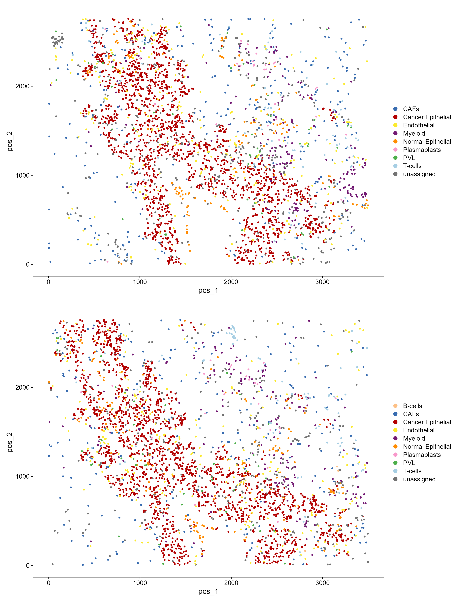
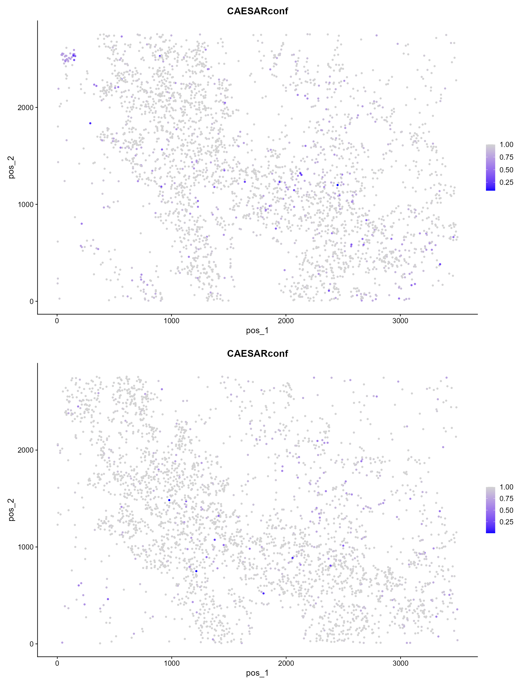
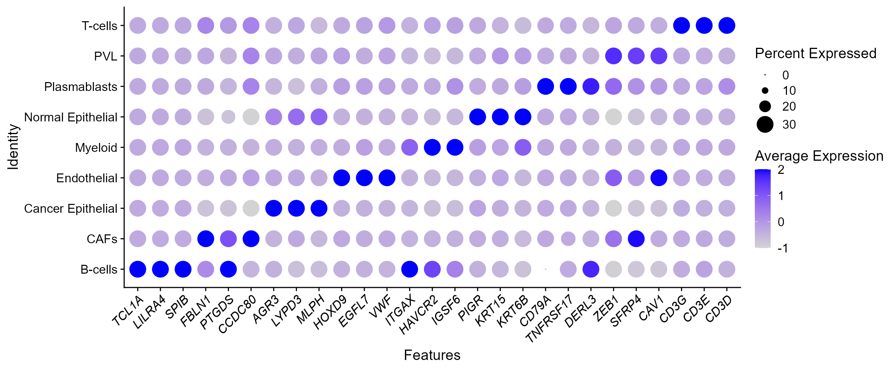
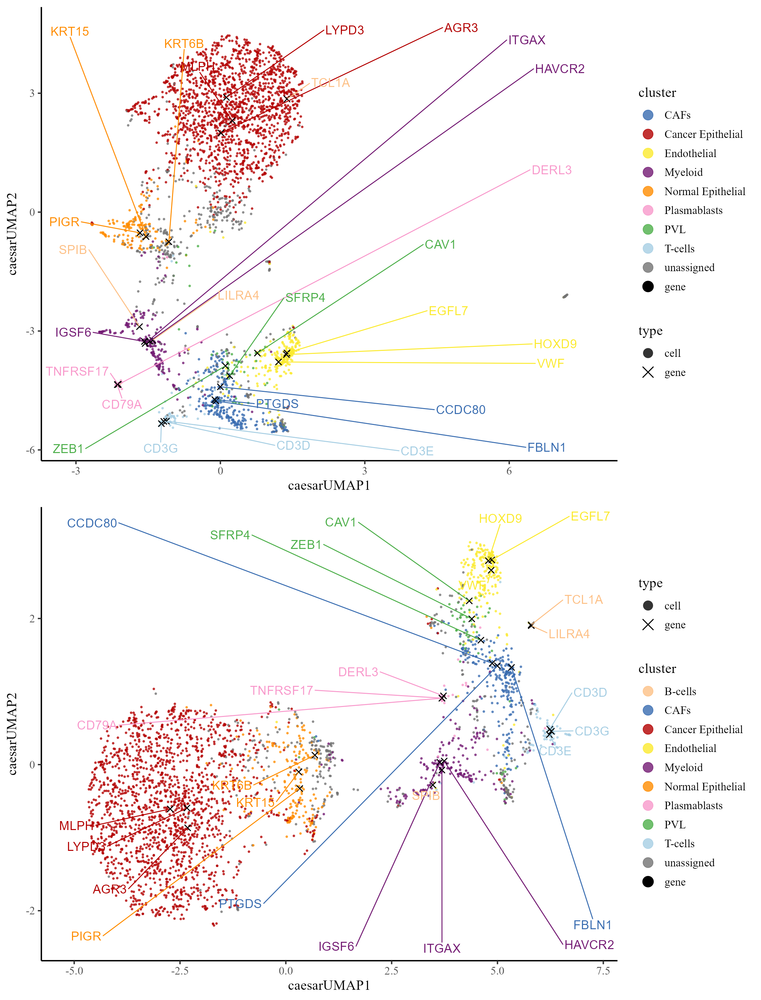
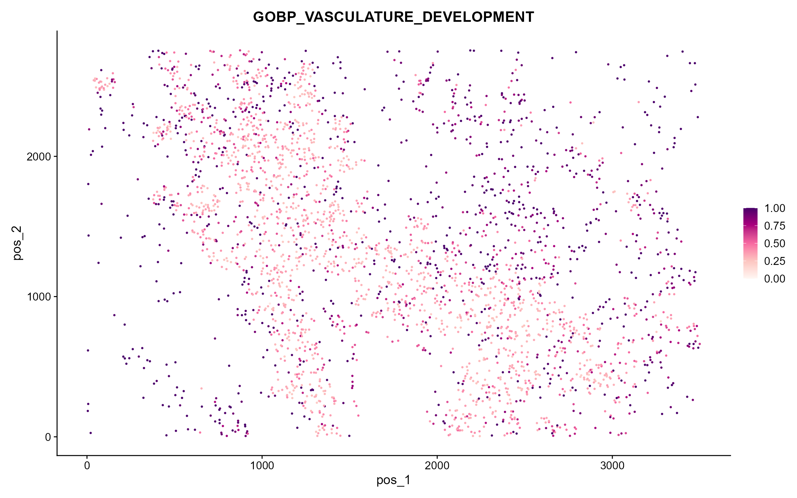

This vignette introduces the CAESAR.Suite workflow for the analysis of Xenium BC spatial transcriptomics dataset. In this vignette, the workflow of CAESAR.Suite consists of five steps
We demonstrate the application of CAESAR.Suite to Xenium data. In
this vignette, the input data includes: BC_scRNAList — two
scRNA-seq reference datasets, each with 3,000 cells;
BC_XeniumList — two Xenium target datasets, each with 3,000
cells; and BC_feature_imgList — two feature matrices
containing histology image information from the Xenium target datasets.
For more details with respect to histology image feature extraction, see
vignette.
The genes of scRNA-seq reference datasets and Xenium target datasets are
aligned. The package can be loaded with the command:
set.seed(1) # set a random seed for reproducibility.
library(CAESAR.Suite) # load the package of CAESAR.Suite method
#>
#>
library(Seurat)
#> Attaching SeuratObject
library(ProFAST)
#> Warning: package 'ProFAST' was built under R version 4.3.3
#> Loading required package: gtools
library(ggplot2)
library(msigdbr)
#> Warning: package 'msigdbr' was built under R version 4.3.3
library(dplyr)
#>
#> Attaching package: 'dplyr'
#> The following objects are masked from 'package:stats':
#>
#> filter, lag
#> The following objects are masked from 'package:base':
#>
#> intersect, setdiff, setequal, unionThose data can be downloaded and load to the current working path by the following command:
githubURL <- "https://github.com/XiaoZhangryy/CAESAR.Suite/blob/master/vignettes_data/BC_scRNAList.rda?raw=true"
BC_scRNAList_file <- file.path(tempdir(), "BC_scRNAList.rda")
download.file(githubURL, BC_scRNAList_file, mode='wb')
load(BC_scRNAList_file)
print(BC_scRNAList)
#> $Ref1
#> An object of class Seurat
#> 302 features across 7023 samples within 1 assay
#> Active assay: RNA (302 features, 0 variable features)
#>
#> $Ref2
#> An object of class Seurat
#> 302 features across 8609 samples within 1 assay
#> Active assay: RNA (302 features, 0 variable features)
githubURL <- "https://github.com/XiaoZhangryy/CAESAR.Suite/blob/master/vignettes_data/BC_XeniumList.rda?raw=true"
BC_XeniumList_file <- file.path(tempdir(), "BC_XeniumList.rda")
download.file(githubURL, BC_XeniumList_file, mode='wb')
load(BC_XeniumList_file)
print(BC_XeniumList)
#> $BC1
#> An object of class Seurat
#> 302 features across 3000 samples within 1 assay
#> Active assay: RNA (302 features, 0 variable features)
#>
#> $BC2
#> An object of class Seurat
#> 302 features across 3000 samples within 1 assay
#> Active assay: RNA (302 features, 0 variable features)
githubURL <- "https://github.com/XiaoZhangryy/CAESAR.Suite/blob/master/vignettes_data/BC_feature_imgList.rda?raw=true"
BC_feature_imgList_file <- file.path(tempdir(), "BC_feature_imgList.rda")
download.file(githubURL, BC_feature_imgList_file, mode='wb')
load(BC_feature_imgList_file)
print(sapply(BC_feature_imgList, dim))
#> BC1 BC2
#> [1,] 3000 3000
#> [2,] 576 576Users can perform appropriate quality control on the reference dataset and target datasets. Genes expressed in less than one cell are required to remove to avoid unknown errors. Other quality control steps can be set by the user according to the data quality. Here, since scRNA-seq reference datasets and Xenium target datasets had been aligned, we do not perform quality control.
# BC_scRNAList <- lapply(BC_scRNAList, function(seu) {
# CreateSeuratObject(
# counts = seu@assays$RNA@counts,
# meta.data = seu@meta.data,
# min.features = 5,
# min.cells = 1
# )
# })
#
# print(BC_scRNAList)
#
#
# BC_XeniumList <- lapply(BC_XeniumList, function(seu) {
# CreateSeuratObject(
# counts = seu@assays$RNA@counts,
# meta.data = seu@meta.data,
# min.features = 5,
# min.cells = 1
# )
# })
#
# print(BC_XeniumList)
#
# BC_feature_imgList <- lapply(1:2, function(i) {
# BC_feature_imgList[[i]][colnames(BC_XeniumList[[i]]), ]
# })First, we normalize the data and select the variable genes. We align genes and variable genes of reference and target data.
# align genes
common_genes <- Reduce(intersect, c(
lapply(BC_scRNAList, rownames),
lapply(BC_XeniumList, rownames)
))
print(length(common_genes))
#> [1] 302
# all common genes are used as variable genes, as only around 300 genes here
BC_scRNAList <- lapply(BC_scRNAList, function(seu) {
seu <- seu[common_genes, ]
seu <- NormalizeData(seu)
VariableFeatures(seu) <- common_genes
seu
})
BC_XeniumList <- lapply(BC_XeniumList, function(seu) {
seu <- seu[common_genes, ]
seu <- NormalizeData(seu)
VariableFeatures(seu) <- common_genes
seu
})
print(BC_scRNAList)
#> $Ref1
#> An object of class Seurat
#> 302 features across 7023 samples within 1 assay
#> Active assay: RNA (302 features, 302 variable features)
#>
#> $Ref2
#> An object of class Seurat
#> 302 features across 8609 samples within 1 assay
#> Active assay: RNA (302 features, 302 variable features)
print(BC_XeniumList)
#> $BC1
#> An object of class Seurat
#> 302 features across 3000 samples within 1 assay
#> Active assay: RNA (302 features, 302 variable features)
#>
#> $BC2
#> An object of class Seurat
#> 302 features across 3000 samples within 1 assay
#> Active assay: RNA (302 features, 302 variable features)We introduce how to use CAESAR to detect signature genes form scRNA-seq reference data. First, we calculate the co-embeddings.
BC_scRNAList <- lapply(BC_scRNAList, ProFAST::NCFM, q = 50)
#> 2024-09-12 20:20:48.015214 : ***** Finish CoFAST, 0.018 mins elapsed.
#> 2024-09-12 20:20:49.816489 : ***** Finish CoFAST, 0.021 mins elapsed.Then, we detect signature genes.
# calculate cell-gene distance
BC_scRNAList <- lapply(BC_scRNAList, ProFAST::pdistance, reduction = "ncfm")
#> Calculate co-embedding distance...
#> Calculate co-embedding distance...
# identify signature genes
sg_sc_List <- lapply(BC_scRNAList, function(seu) {
print(table(seu$CellType))
Idents(seu) <- seu$CellType
find.sig.genes(seu)
})
#>
#> Endothelial CAFs PVL B-cells
#> 41 245 46 88
#> Plasmablasts T-cells Myeloid Cancer Epithelial
#> 1453 902 206 4018
#> Normal Epithelial
#> 24
#>
#> Endothelial CAFs PVL B-cells
#> 2778 1292 1285 99
#> Plasmablasts T-cells Myeloid Cancer Epithelial
#> 51 641 285 212
#> Normal Epithelial
#> 1966
str(sg_sc_List)
#> List of 2
#> $ Ref1:List of 9
#> ..$ B-cells :'data.frame': 302 obs. of 5 variables:
#> .. ..$ distance : num [1:302] 0.0645 0.0653 0.0657 0.0674 0.0676 ...
#> .. ..$ expr.prop : num [1:302] 0.591 0.295 0.148 0.182 0.443 ...
#> .. ..$ expr.prop.others: num [1:302] 0.00216 0.00433 0.00173 0.01442 0.13771 ...
#> .. ..$ label : chr [1:302] "B-cells" "B-cells" "B-cells" "B-cells" ...
#> .. ..$ gene : chr [1:302] "MS4A1" "BANK1" "SPIB" "CCR7" ...
#> ..$ CAFs :'data.frame': 302 obs. of 5 variables:
#> .. ..$ distance : num [1:302] 0.0683 0.0684 0.0684 0.0684 0.0686 ...
#> .. ..$ expr.prop : num [1:302] 0.51 0.376 0.376 0.739 0.918 ...
#> .. ..$ expr.prop.others: num [1:302] 0.00339 0.00162 0.00398 0.01107 0.01741 ...
#> .. ..$ label : chr [1:302] "CAFs" "CAFs" "CAFs" "CAFs" ...
#> .. ..$ gene : chr [1:302] "DPT" "PDGFRA" "GJB2" "POSTN" ...
#> ..$ Cancer Epithelial:'data.frame': 302 obs. of 5 variables:
#> .. ..$ distance : num [1:302] 0.0881 0.0881 0.0881 0.0881 0.0882 ...
#> .. ..$ expr.prop : num [1:302] 0.892 0.967 0.922 0.82 0.824 ...
#> .. ..$ expr.prop.others: num [1:302] 0.0729 0.1684 0.1135 0.0483 0.0622 ...
#> .. ..$ label : chr [1:302] "Cancer Epithelial" "Cancer Epithelial" "Cancer Epithelial" "Cancer Epithelial" ...
#> .. ..$ gene : chr [1:302] "KRT8" "KRT7" "CLDN4" "EPCAM" ...
#> ..$ Endothelial :'data.frame': 302 obs. of 5 variables:
#> .. ..$ distance : num [1:302] 0.0742 0.0743 0.0751 0.0755 0.0759 ...
#> .. ..$ expr.prop : num [1:302] 0.854 0.756 0.463 0.39 0.39 ...
#> .. ..$ expr.prop.others: num [1:302] 0.000573 0.00043 0.000716 0 0.000859 ...
#> .. ..$ label : chr [1:302] "Endothelial" "Endothelial" "Endothelial" "Endothelial" ...
#> .. ..$ gene : chr [1:302] "CLEC14A" "VWF" "CLDN5" "SOX17" ...
#> ..$ Myeloid :'data.frame': 302 obs. of 5 variables:
#> .. ..$ distance : num [1:302] 0.0612 0.0616 0.0616 0.0616 0.0618 ...
#> .. ..$ expr.prop : num [1:302] 0.704 0.369 0.519 0.379 0.714 ...
#> .. ..$ expr.prop.others: num [1:302] 0.003521 0.000293 0.0022 0.00176 0.006161 ...
#> .. ..$ label : chr [1:302] "Myeloid" "Myeloid" "Myeloid" "Myeloid" ...
#> .. ..$ gene : chr [1:302] "IGSF6" "CD163" "MNDA" "ITGAX" ...
#> ..$ Normal Epithelial:'data.frame': 302 obs. of 5 variables:
#> .. ..$ distance : num [1:302] 0.0823 0.0842 0.0859 0.0864 0.0865 ...
#> .. ..$ expr.prop : num [1:302] 0.417 0.292 0.25 0.417 0.75 ...
#> .. ..$ expr.prop.others: num [1:302] 0.00143 0.00286 0.00129 0.04958 0.49707 ...
#> .. ..$ label : chr [1:302] "Normal Epithelial" "Normal Epithelial" "Normal Epithelial" "Normal Epithelial" ...
#> .. ..$ gene : chr [1:302] "PIGR" "KIT" "KRT14" "KRT15" ...
#> ..$ Plasmablasts :'data.frame': 302 obs. of 5 variables:
#> .. ..$ distance : num [1:302] 0.0637 0.0638 0.0639 0.0641 0.0644 ...
#> .. ..$ expr.prop : num [1:302] 0.847 0.971 0.886 0.405 0.182 ...
#> .. ..$ expr.prop.others: num [1:302] 0.04542 0.09803 0.11239 0.00808 0.01131 ...
#> .. ..$ label : chr [1:302] "Plasmablasts" "Plasmablasts" "Plasmablasts" "Plasmablasts" ...
#> .. ..$ gene : chr [1:302] "CD79A" "MZB1" "DERL3" "TNFRSF17" ...
#> ..$ PVL :'data.frame': 302 obs. of 5 variables:
#> .. ..$ distance : num [1:302] 0.0743 0.0744 0.0747 0.0752 0.0752 ...
#> .. ..$ expr.prop : num [1:302] 0.8261 0.2609 0.0435 0.8043 0.7826 ...
#> .. ..$ expr.prop.others: num [1:302] 0.022789 0.00774 0.000717 0.057475 0.063351 ...
#> .. ..$ label : chr [1:302] "PVL" "PVL" "PVL" "PVL" ...
#> .. ..$ gene : chr [1:302] "PDGFRB" "PTN" "TCEAL7" "ACTA2" ...
#> ..$ T-cells :'data.frame': 302 obs. of 5 variables:
#> .. ..$ distance : num [1:302] 0.0709 0.0711 0.0711 0.0711 0.0712 ...
#> .. ..$ expr.prop : num [1:302] 0.685 0.538 0.247 0.334 0.143 ...
#> .. ..$ expr.prop.others: num [1:302] 0.01797 0.01029 0.00539 0.00768 0.00327 ...
#> .. ..$ label : chr [1:302] "T-cells" "T-cells" "T-cells" "T-cells" ...
#> .. ..$ gene : chr [1:302] "CD3E" "CD3D" "CD247" "CD3G" ...
#> $ Ref2:List of 9
#> ..$ B-cells :'data.frame': 302 obs. of 5 variables:
#> .. ..$ distance : num [1:302] 0.0604 0.0607 0.061 0.0638 0.0649 ...
#> .. ..$ expr.prop : num [1:302] 0.364 0.263 0.869 0.596 0.96 ...
#> .. ..$ expr.prop.others: num [1:302] 0.000588 0.000705 0.002938 0.006933 0.011633 ...
#> .. ..$ label : chr [1:302] "B-cells" "B-cells" "B-cells" "B-cells" ...
#> .. ..$ gene : chr [1:302] "CD19" "TCL1A" "MS4A1" "BANK1" ...
#> ..$ CAFs :'data.frame': 302 obs. of 5 variables:
#> .. ..$ distance : num [1:302] 0.0699 0.07 0.0701 0.0702 0.0702 ...
#> .. ..$ expr.prop : num [1:302] 0.57 0.924 0.711 0.94 0.861 ...
#> .. ..$ expr.prop.others: num [1:302] 0.0178 0.0692 0.0327 0.0977 0.0791 ...
#> .. ..$ label : chr [1:302] "CAFs" "CAFs" "CAFs" "CAFs" ...
#> .. ..$ gene : chr [1:302] "DPT" "FBLN1" "IGF1" "LUM" ...
#> ..$ Cancer Epithelial:'data.frame': 302 obs. of 5 variables:
#> .. ..$ distance : num [1:302] 0.0686 0.07 0.0703 0.0718 0.0721 ...
#> .. ..$ expr.prop : num [1:302] 0.0519 0.0849 0.5708 0.0896 0.7736 ...
#> .. ..$ expr.prop.others: num [1:302] 0.00155 0.00286 0.02918 0.00512 0.04835 ...
#> .. ..$ label : chr [1:302] "Cancer Epithelial" "Cancer Epithelial" "Cancer Epithelial" "Cancer Epithelial" ...
#> .. ..$ gene : chr [1:302] "CEACAM6" "MKI67" "SCGB2A1" "TOP2A" ...
#> ..$ Endothelial :'data.frame': 302 obs. of 5 variables:
#> .. ..$ distance : num [1:302] 0.0755 0.0755 0.0755 0.0755 0.0756 ...
#> .. ..$ expr.prop : num [1:302] 0.961 0.932 0.862 0.815 0.672 ...
#> .. ..$ expr.prop.others: num [1:302] 0.0777 0.058 0.0537 0.0566 0.0268 ...
#> .. ..$ label : chr [1:302] "Endothelial" "Endothelial" "Endothelial" "Endothelial" ...
#> .. ..$ gene : chr [1:302] "PECAM1" "VWF" "CLEC14A" "EGFL7" ...
#> ..$ Myeloid :'data.frame': 302 obs. of 5 variables:
#> .. ..$ distance : num [1:302] 0.0622 0.0623 0.0623 0.0624 0.0624 ...
#> .. ..$ expr.prop : num [1:302] 0.621 0.695 0.47 0.839 0.509 ...
#> .. ..$ expr.prop.others: num [1:302] 0.001442 0.005646 0.000961 0.008289 0.000961 ...
#> .. ..$ label : chr [1:302] "Myeloid" "Myeloid" "Myeloid" "Myeloid" ...
#> .. ..$ gene : chr [1:302] "IGSF6" "LYZ" "ITGAX" "AIF1" ...
#> ..$ Normal Epithelial:'data.frame': 302 obs. of 5 variables:
#> .. ..$ distance : num [1:302] 0.0704 0.0704 0.0705 0.0707 0.0708 ...
#> .. ..$ expr.prop : num [1:302] 0.948 0.895 0.658 0.68 0.911 ...
#> .. ..$ expr.prop.others: num [1:302] 0.1439 0.1423 0.0831 0.1138 0.1891 ...
#> .. ..$ label : chr [1:302] "Normal Epithelial" "Normal Epithelial" "Normal Epithelial" "Normal Epithelial" ...
#> .. ..$ gene : chr [1:302] "KRT8" "TACSTD2" "SDC4" "DSP" ...
#> ..$ Plasmablasts :'data.frame': 302 obs. of 5 variables:
#> .. ..$ distance : num [1:302] 0.0581 0.0694 0.0723 0.0745 0.0791 ...
#> .. ..$ expr.prop : num [1:302] 0.745 0.922 1 0.706 0.922 ...
#> .. ..$ expr.prop.others: num [1:302] 0.00105 0.01145 0.01542 0.00631 0.01718 ...
#> .. ..$ label : chr [1:302] "Plasmablasts" "Plasmablasts" "Plasmablasts" "Plasmablasts" ...
#> .. ..$ gene : chr [1:302] "TNFRSF17" "DERL3" "MZB1" "SLAMF7" ...
#> ..$ PVL :'data.frame': 302 obs. of 5 variables:
#> .. ..$ distance : num [1:302] 0.0691 0.07 0.07 0.0704 0.0708 ...
#> .. ..$ expr.prop : num [1:302] 0.2747 0.6654 0.0506 0.6833 0.6856 ...
#> .. ..$ expr.prop.others: num [1:302] 0.01338 0.05926 0.00614 0.11182 0.14104 ...
#> .. ..$ label : chr [1:302] "PVL" "PVL" "PVL" "PVL" ...
#> .. ..$ gene : chr [1:302] "AVPR1A" "NDUFA4L2" "FOXC2" "MYH11" ...
#> ..$ T-cells :'data.frame': 302 obs. of 5 variables:
#> .. ..$ distance : num [1:302] 0.0638 0.0639 0.0639 0.0642 0.0643 ...
#> .. ..$ expr.prop : num [1:302] 0.839 0.641 0.437 0.75 0.317 ...
#> .. ..$ expr.prop.others: num [1:302] 0.00791 0.00289 0.00276 0.02246 0.00314 ...
#> .. ..$ label : chr [1:302] "T-cells" "T-cells" "T-cells" "T-cells" ...
#> .. ..$ gene : chr [1:302] "CD3E" "CD3D" "CD3G" "IL7R" ...Finally, select marker genes for each cell type from the signature gene list.
markerList <- lapply(sg_sc_List, marker.select, overlap.max = 1)
print(markerList)
#> $Ref1
#> $Ref1$`B-cells`
#> [1] "MS4A1" "BANK1" "SPIB" "CCR7"
#>
#> $Ref1$CAFs
#> [1] "DPT" "PDGFRA" "GJB2" "POSTN"
#>
#> $Ref1$`Cancer Epithelial`
#> [1] "KRT8" "KRT7" "CLDN4" "EPCAM"
#>
#> $Ref1$Endothelial
#> [1] "CLEC14A" "VWF" "CLDN5" "SOX17"
#>
#> $Ref1$Myeloid
#> [1] "IGSF6" "CD163" "MNDA" "ITGAX"
#>
#> $Ref1$`Normal Epithelial`
#> [1] "PIGR" "KIT" "KRT14" "KRT15"
#>
#> $Ref1$Plasmablasts
#> [1] "CD79A" "MZB1" "DERL3" "TNFRSF17"
#>
#> $Ref1$PVL
#> [1] "PDGFRB" "PTN" "ACTA2" "PCOLCE"
#>
#> $Ref1$`T-cells`
#> [1] "CD3E" "CD3D" "CD247" "CD3G"
#>
#>
#> $Ref2
#> $Ref2$`B-cells`
#> [1] "CD19" "TCL1A" "MS4A1" "BANK1"
#>
#> $Ref2$CAFs
#> [1] "DPT" "FBLN1" "IGF1" "LUM"
#>
#> $Ref2$`Cancer Epithelial`
#> [1] "SCGB2A1" "AGR3" "ESR1" "FOXA1"
#>
#> $Ref2$Endothelial
#> [1] "PECAM1" "VWF" "CLEC14A" "EGFL7"
#>
#> $Ref2$Myeloid
#> [1] "IGSF6" "LYZ" "ITGAX" "AIF1"
#>
#> $Ref2$`Normal Epithelial`
#> [1] "KRT8" "TACSTD2" "SDC4" "DSP"
#>
#> $Ref2$Plasmablasts
#> [1] "TNFRSF17" "DERL3" "MZB1" "SLAMF7"
#>
#> $Ref2$PVL
#> [1] "AVPR1A" "NDUFA4L2" "MYH11" "PDGFRB"
#>
#> $Ref2$`T-cells`
#> [1] "CD3E" "CD3D" "CD3G" "IL7R"Similarly, we first calculate co-embeddings for Xenium BC dataset. The difference is that spatial transcriptome data has spatial coordinates and image feature information, so we can obtain image-based spatial aware co-embeddings.
BC_XeniumList <- lapply(1:2, function(i) {
seu <- BC_XeniumList[[i]]
# the spatial coordinates
pos <- seu@meta.data[, c("x_centroid", "y_centroid")]
print(head(pos))
# the image feature
feature_img <- BC_feature_imgList[[i]]
seu <- CAESAR.coembedding.image(
seu, feature_img, pos, reduction.name = "caesar", q = 50)
seu
})
#> x_centroid y_centroid
#> 24387 2296.2025 913.7803
#> 4049 852.6599 1739.8252
#> 11570 1259.9557 1564.8037
#> 25172 2199.9682 1074.7750
#> 32617 2665.6389 1595.0457
#> 13902 923.3366 2157.2375
#> Find the adjacency matrix by bisection method...
#> Current radius is 200.5
#> Median of neighborhoods is 0
#> Current radius is 100.75
#> Median of neighborhoods is 66
#> Current radius is 50.88
#> Median of neighborhoods is 17
#> Current radius is 50.88
#> Median of neighborhoods is 4
#> Step into function
#> Centering X
#> Calculate initial values using PCA
#> Finish the initialization!
#> Start E-step
#> Calculate XLB...Calculate M...Calculate Mu_h...Finish E-step
#> Update mu
#> Update B
#> Update Lambda
#> Update Phi
#> iter = 2, elbo= -593983.513739, delbo=-59398351373921687926824668.000000
#> Start E-step
#> Calculate XLB...Calculate M...Calculate Mu_h...Finish E-step
#> Update mu
#> Update B
#> Update Lambda
#> Update Phi
#> iter = 3, elbo= -574548.382010, delbo=0.032720
#> Start E-step
#> Calculate XLB...Calculate M...Calculate Mu_h...Finish E-step
#> Update mu
#> Update B
#> Update Lambda
#> Update Phi
#> iter = 4, elbo= -569948.909649, delbo=0.008005
#> Start E-step
#> Calculate XLB...Calculate M...Calculate Mu_h...Finish E-step
#> Update mu
#> Update B
#> Update Lambda
#> Update Phi
#> iter = 5, elbo= -567200.047658, delbo=0.004823
#> Start E-step
#> Calculate XLB...Calculate M...Calculate Mu_h...Finish E-step
#> Update mu
#> Update B
#> Update Lambda
#> Update Phi
#> iter = 6, elbo= -565256.567256, delbo=0.003426
#> Start E-step
#> Calculate XLB...Calculate M...Calculate Mu_h...Finish E-step
#> Update mu
#> Update B
#> Update Lambda
#> Update Phi
#> iter = 7, elbo= -563815.667637, delbo=0.002549
#> Start E-step
#> Calculate XLB...Calculate M...Calculate Mu_h...Finish E-step
#> Update mu
#> Update B
#> Update Lambda
#> Update Phi
#> iter = 8, elbo= -562743.730446, delbo=0.001901
#> Start E-step
#> Calculate XLB...Calculate M...Calculate Mu_h...Finish E-step
#> Update mu
#> Update B
#> Update Lambda
#> Update Phi
#> iter = 9, elbo= -561912.619046, delbo=0.001477
#> Start E-step
#> Calculate XLB...Calculate M...Calculate Mu_h...Finish E-step
#> Update mu
#> Update B
#> Update Lambda
#> Update Phi
#> iter = 10, elbo= -561232.784890, delbo=0.001210
#> Start E-step
#> Calculate XLB...Calculate M...Calculate Mu_h...Finish E-step
#> Update mu
#> Update B
#> Update Lambda
#> Update Phi
#> iter = 11, elbo= -560646.304523, delbo=0.001045
#> Start E-step
#> Calculate XLB...Calculate M...Calculate Mu_h...Finish E-step
#> Update mu
#> Update B
#> Update Lambda
#> Update Phi
#> iter = 12, elbo= -560118.172819, delbo=0.000942
#> Start E-step
#> Calculate XLB...Calculate M...Calculate Mu_h...Finish E-step
#> Update mu
#> Update B
#> Update Lambda
#> Update Phi
#> iter = 13, elbo= -559625.808512, delbo=0.000879
#> Start E-step
#> Calculate XLB...Calculate M...Calculate Mu_h...Finish E-step
#> Update mu
#> Update B
#> Update Lambda
#> Update Phi
#> iter = 14, elbo= -559155.484286, delbo=0.000840
#> Start E-step
#> Calculate XLB...Calculate M...Calculate Mu_h...Finish E-step
#> Update mu
#> Update B
#> Update Lambda
#> Update Phi
#> iter = 15, elbo= -558699.331457, delbo=0.000816
#> Start E-step
#> Calculate XLB...Calculate M...Calculate Mu_h...Finish E-step
#> Update mu
#> Update B
#> Update Lambda
#> Update Phi
#> iter = 16, elbo= -558254.264172, delbo=0.000797
#> Start E-step
#> Calculate XLB...Calculate M...Calculate Mu_h...Finish E-step
#> Update mu
#> Update B
#> Update Lambda
#> Update Phi
#> iter = 17, elbo= -557820.923119, delbo=0.000776
#> Start E-step
#> Calculate XLB...Calculate M...Calculate Mu_h...Finish E-step
#> Update mu
#> Update B
#> Update Lambda
#> Update Phi
#> iter = 18, elbo= -557402.609585, delbo=0.000750
#> Start E-step
#> Calculate XLB...Calculate M...Calculate Mu_h...Finish E-step
#> Update mu
#> Update B
#> Update Lambda
#> Update Phi
#> iter = 19, elbo= -557003.619831, delbo=0.000716
#> Start E-step
#> Calculate XLB...Calculate M...Calculate Mu_h...Finish E-step
#> Update mu
#> Update B
#> Update Lambda
#> Update Phi
#> iter = 20, elbo= -556627.795572, delbo=0.000675
#> Start E-step
#> Calculate XLB...Calculate M...Calculate Mu_h...Finish E-step
#> Update mu
#> Update B
#> Update Lambda
#> Update Phi
#> iter = 21, elbo= -556277.578078, delbo=0.000629
#> Start E-step
#> Calculate XLB...Calculate M...Calculate Mu_h...Finish E-step
#> Update mu
#> Update B
#> Update Lambda
#> Update Phi
#> iter = 22, elbo= -555953.591518, delbo=0.000582
#> Start E-step
#> Calculate XLB...Calculate M...Calculate Mu_h...Finish E-step
#> Update mu
#> Update B
#> Update Lambda
#> Update Phi
#> iter = 23, elbo= -555654.578032, delbo=0.000538
#> Start E-step
#> Calculate XLB...Calculate M...Calculate Mu_h...Finish E-step
#> Update mu
#> Update B
#> Update Lambda
#> Update Phi
#> iter = 24, elbo= -555377.754873, delbo=0.000498
#> Start E-step
#> Calculate XLB...Calculate M...Calculate Mu_h...Finish E-step
#> Update mu
#> Update B
#> Update Lambda
#> Update Phi
#> iter = 25, elbo= -555119.458514, delbo=0.000465
#> Start E-step
#> Calculate XLB...Calculate M...Calculate Mu_h...Finish E-step
#> Update mu
#> Update B
#> Update Lambda
#> Update Phi
#> iter = 26, elbo= -554875.836816, delbo=0.000439
#> Start E-step
#> Calculate XLB...Calculate M...Calculate Mu_h...Finish E-step
#> Update mu
#> Update B
#> Update Lambda
#> Update Phi
#> iter = 27, elbo= -554643.379624, delbo=0.000419
#> Start E-step
#> Calculate XLB...Calculate M...Calculate Mu_h...Finish E-step
#> Update mu
#> Update B
#> Update Lambda
#> Update Phi
#> iter = 28, elbo= -554419.245297, delbo=0.000404
#> Start E-step
#> Calculate XLB...Calculate M...Calculate Mu_h...Finish E-step
#> Update mu
#> Update B
#> Update Lambda
#> Update Phi
#> iter = 29, elbo= -554201.409294, delbo=0.000393
#> Start E-step
#> Calculate XLB...Calculate M...Calculate Mu_h...Finish E-step
#> Update mu
#> Update B
#> Update Lambda
#> Update Phi
#> iter = 30, elbo= -553988.672079, delbo=0.000384
#> 2024-09-12 20:21:11.648035 : ***** Finish calculate CAESAR embedding, 0.294 mins elapsed.
#> The spatial cooridnates are 2 dimensions
#> Find the adjacency matrix by bisection method...
#> Current radius is 200.5
#> Median of neighborhoods is 0
#> Current radius is 100.75
#> Median of neighborhoods is 66
#> Current radius is 50.88
#> Median of neighborhoods is 17
#> Current radius is 50.88
#> Median of neighborhoods is 4
#> x_centroid y_centroid
#> 24387 1832.7835 1032.5848
#> 4049 476.8307 2294.2419
#> 11570 1655.3104 332.9922
#> 25172 1699.3427 1361.4992
#> 32617 2694.3627 286.2827
#> 13902 971.3380 1172.3937
#> Find the adjacency matrix by bisection method...
#> Current radius is 200.5
#> Median of neighborhoods is 0
#> Current radius is 100.75
#> Median of neighborhoods is 65
#> Current radius is 50.88
#> Median of neighborhoods is 18
#> Current radius is 50.88
#> Median of neighborhoods is 5
#> Step into function
#> Centering X
#> Calculate initial values using PCA
#> Finish the initialization!
#> Start E-step
#> Calculate XLB...Calculate M...Calculate Mu_h...Finish E-step
#> Update mu
#> Update B
#> Update Lambda
#> Update Phi
#> iter = 2, elbo= -592047.437411, delbo=-59204743741083634684084602.000000
#> Start E-step
#> Calculate XLB...Calculate M...Calculate Mu_h...Finish E-step
#> Update mu
#> Update B
#> Update Lambda
#> Update Phi
#> iter = 3, elbo= -573230.881064, delbo=0.031782
#> Start E-step
#> Calculate XLB...Calculate M...Calculate Mu_h...Finish E-step
#> Update mu
#> Update B
#> Update Lambda
#> Update Phi
#> iter = 4, elbo= -569049.338656, delbo=0.007295
#> Start E-step
#> Calculate XLB...Calculate M...Calculate Mu_h...Finish E-step
#> Update mu
#> Update B
#> Update Lambda
#> Update Phi
#> iter = 5, elbo= -566508.571569, delbo=0.004465
#> Start E-step
#> Calculate XLB...Calculate M...Calculate Mu_h...Finish E-step
#> Update mu
#> Update B
#> Update Lambda
#> Update Phi
#> iter = 6, elbo= -564595.023110, delbo=0.003378
#> Start E-step
#> Calculate XLB...Calculate M...Calculate Mu_h...Finish E-step
#> Update mu
#> Update B
#> Update Lambda
#> Update Phi
#> iter = 7, elbo= -563091.668725, delbo=0.002663
#> Start E-step
#> Calculate XLB...Calculate M...Calculate Mu_h...Finish E-step
#> Update mu
#> Update B
#> Update Lambda
#> Update Phi
#> iter = 8, elbo= -561950.440446, delbo=0.002027
#> Start E-step
#> Calculate XLB...Calculate M...Calculate Mu_h...Finish E-step
#> Update mu
#> Update B
#> Update Lambda
#> Update Phi
#> iter = 9, elbo= -561090.315895, delbo=0.001531
#> Start E-step
#> Calculate XLB...Calculate M...Calculate Mu_h...Finish E-step
#> Update mu
#> Update B
#> Update Lambda
#> Update Phi
#> iter = 10, elbo= -560430.285750, delbo=0.001176
#> Start E-step
#> Calculate XLB...Calculate M...Calculate Mu_h...Finish E-step
#> Update mu
#> Update B
#> Update Lambda
#> Update Phi
#> iter = 11, elbo= -559903.561787, delbo=0.000940
#> Start E-step
#> Calculate XLB...Calculate M...Calculate Mu_h...Finish E-step
#> Update mu
#> Update B
#> Update Lambda
#> Update Phi
#> iter = 12, elbo= -559464.796024, delbo=0.000784
#> Start E-step
#> Calculate XLB...Calculate M...Calculate Mu_h...Finish E-step
#> Update mu
#> Update B
#> Update Lambda
#> Update Phi
#> iter = 13, elbo= -559083.431684, delbo=0.000682
#> Start E-step
#> Calculate XLB...Calculate M...Calculate Mu_h...Finish E-step
#> Update mu
#> Update B
#> Update Lambda
#> Update Phi
#> iter = 14, elbo= -558739.806602, delbo=0.000615
#> Start E-step
#> Calculate XLB...Calculate M...Calculate Mu_h...Finish E-step
#> Update mu
#> Update B
#> Update Lambda
#> Update Phi
#> iter = 15, elbo= -558420.977283, delbo=0.000571
#> Start E-step
#> Calculate XLB...Calculate M...Calculate Mu_h...Finish E-step
#> Update mu
#> Update B
#> Update Lambda
#> Update Phi
#> iter = 16, elbo= -558118.730455, delbo=0.000541
#> Start E-step
#> Calculate XLB...Calculate M...Calculate Mu_h...Finish E-step
#> Update mu
#> Update B
#> Update Lambda
#> Update Phi
#> iter = 17, elbo= -557828.101167, delbo=0.000521
#> Start E-step
#> Calculate XLB...Calculate M...Calculate Mu_h...Finish E-step
#> Update mu
#> Update B
#> Update Lambda
#> Update Phi
#> iter = 18, elbo= -557546.793380, delbo=0.000504
#> Start E-step
#> Calculate XLB...Calculate M...Calculate Mu_h...Finish E-step
#> Update mu
#> Update B
#> Update Lambda
#> Update Phi
#> iter = 19, elbo= -557274.701835, delbo=0.000488
#> Start E-step
#> Calculate XLB...Calculate M...Calculate Mu_h...Finish E-step
#> Update mu
#> Update B
#> Update Lambda
#> Update Phi
#> iter = 20, elbo= -557013.461475, delbo=0.000469
#> Start E-step
#> Calculate XLB...Calculate M...Calculate Mu_h...Finish E-step
#> Update mu
#> Update B
#> Update Lambda
#> Update Phi
#> iter = 21, elbo= -556765.652925, delbo=0.000445
#> Start E-step
#> Calculate XLB...Calculate M...Calculate Mu_h...Finish E-step
#> Update mu
#> Update B
#> Update Lambda
#> Update Phi
#> iter = 22, elbo= -556533.732295, delbo=0.000417
#> Start E-step
#> Calculate XLB...Calculate M...Calculate Mu_h...Finish E-step
#> Update mu
#> Update B
#> Update Lambda
#> Update Phi
#> iter = 23, elbo= -556318.910276, delbo=0.000386
#> Start E-step
#> Calculate XLB...Calculate M...Calculate Mu_h...Finish E-step
#> Update mu
#> Update B
#> Update Lambda
#> Update Phi
#> iter = 24, elbo= -556120.557224, delbo=0.000357
#> Start E-step
#> Calculate XLB...Calculate M...Calculate Mu_h...Finish E-step
#> Update mu
#> Update B
#> Update Lambda
#> Update Phi
#> iter = 25, elbo= -555936.435244, delbo=0.000331
#> Start E-step
#> Calculate XLB...Calculate M...Calculate Mu_h...Finish E-step
#> Update mu
#> Update B
#> Update Lambda
#> Update Phi
#> iter = 26, elbo= -555763.467782, delbo=0.000311
#> Start E-step
#> Calculate XLB...Calculate M...Calculate Mu_h...Finish E-step
#> Update mu
#> Update B
#> Update Lambda
#> Update Phi
#> iter = 27, elbo= -555598.470069, delbo=0.000297
#> Start E-step
#> Calculate XLB...Calculate M...Calculate Mu_h...Finish E-step
#> Update mu
#> Update B
#> Update Lambda
#> Update Phi
#> iter = 28, elbo= -555438.565512, delbo=0.000288
#> Start E-step
#> Calculate XLB...Calculate M...Calculate Mu_h...Finish E-step
#> Update mu
#> Update B
#> Update Lambda
#> Update Phi
#> iter = 29, elbo= -555281.327159, delbo=0.000283
#> Start E-step
#> Calculate XLB...Calculate M...Calculate Mu_h...Finish E-step
#> Update mu
#> Update B
#> Update Lambda
#> Update Phi
#> iter = 30, elbo= -555124.780564, delbo=0.000282
#> 2024-09-12 20:21:33.363137 : ***** Finish calculate CAESAR embedding, 0.288 mins elapsed.
#> The spatial cooridnates are 2 dimensions
#> Find the adjacency matrix by bisection method...
#> Current radius is 200.5
#> Median of neighborhoods is 0
#> Current radius is 100.75
#> Median of neighborhoods is 65
#> Current radius is 50.88
#> Median of neighborhoods is 18
#> Current radius is 50.88
#> Median of neighborhoods is 5
names(BC_XeniumList) <- paste0("BC", 1:2)
print(BC_XeniumList)
#> $BC1
#> An object of class Seurat
#> 302 features across 3000 samples within 1 assay
#> Active assay: RNA (302 features, 302 variable features)
#> 1 dimensional reduction calculated: caesar
#>
#> $BC2
#> An object of class Seurat
#> 302 features across 3000 samples within 1 assay
#> Active assay: RNA (302 features, 302 variable features)
#> 1 dimensional reduction calculated: caesarSubsequently, the CAESAR co-embeddings and marker gene lists from scRNA-seq reference datasets are used to annotate the Xenium BC data.
# convert marker list to marker frequency matrix
marker.freq <- markerList2mat(markerList)
# perform annotation using CAESAR and save results to Seurat object
BC_XeniumList <- lapply(
BC_XeniumList, CAESAR.annotation, marker.freq = marker.freq,
reduction.name = "caesar", add.to.meta = TRUE
)
#> Calculate co-embedding distance...
#> Warning: package 'purrr' was built under R version 4.3.3
#> Calculate co-embedding distance...
print(colnames(BC_XeniumList[[1]]@meta.data))
#> [1] "orig.ident" "nCount_RNA" "nFeature_RNA"
#> [4] "x_centroid" "y_centroid" "CAESAR"
#> [7] "CAESARunasg" "CAESARconf" "dist_B.cells"
#> [10] "dist_CAFs" "dist_Cancer.Epithelial" "dist_Endothelial"
#> [13] "dist_Myeloid" "dist_Normal.Epithelial" "dist_Plasmablasts"
#> [16] "dist_PVL" "dist_T.cells" "prob_B.cells"
#> [19] "prob_CAFs" "prob_Cancer.Epithelial" "prob_Endothelial"
#> [22] "prob_Myeloid" "prob_Normal.Epithelial" "prob_Plasmablasts"
#> [25] "prob_PVL" "prob_T.cells"In the following, we visualize the CAESAR annotation results.
# set up colors
cols <- setNames(
c(
"#fdc086", "#386cb0", "#b30000", "#FBEA2E", "#731A73",
"#FF8C00", "#F898CB", "#4DAF4A", "#a6cee3", "#737373"
),
c(
"B-cells", "CAFs", "Cancer Epithelial", "Endothelial", "Myeloid",
"Normal Epithelial", "Plasmablasts", "PVL", "T-cells", "unassigned"
)
)
celltypes <- c(
"B-cells", "CAFs", "Cancer Epithelial", "Endothelial", "Myeloid",
"Normal Epithelial", "Plasmablasts", "PVL", "T-cells", "unassigned"
)
BC_XeniumList <- lapply(BC_XeniumList, function(seu) {
Idents(seu) <- factor(seu$CAESARunasg, levels = celltypes)
pos <- seu@meta.data[, c("x_centroid", "y_centroid")]
colnames(pos) <- paste0("pos", 1:2)
seu@reductions[["pos"]] <- CreateDimReducObject(
embeddings = as.matrix(pos),
key = paste0("pos", "_"), assay = "RNA"
)
seu
})First, we visualize the CAESAR annotation account for ‘unassigned’.
plots <- lapply(BC_XeniumList, function(seu) {
DimPlot(seu, reduction = "pos", cols = cols, pt.size = 1)
})
cowplot::plot_grid(plotlist = plots, ncol = 1)
The confidence level of the CAESAR annotation can be visualized by
plots <- lapply(BC_XeniumList, function(seu) {
FeaturePlot(
seu,
reduction = "pos", features = "CAESARconf", pt.size = 1,
cols = c("blue", "lightgrey"), min.cutoff = 0.0, max.cutoff = 1.0
)
})
cowplot::plot_grid(plotlist = plots, ncol = 1)
Next, we detect and visualize the signature genes for each cell type.
sg_List <- lapply(BC_XeniumList, find.sig.genes)
str(sg_List)
#> List of 2
#> $ BC1:List of 9
#> ..$ CAFs :'data.frame': 302 obs. of 5 variables:
#> .. ..$ distance : num [1:302] 22.1 22.3 22.4 22.4 22.5 ...
#> .. ..$ expr.prop : num [1:302] 0.643 0.632 0.353 0.711 0.327 ...
#> .. ..$ expr.prop.others: num [1:302] 0.0794 0.0951 0.056 0.1397 0.0435 ...
#> .. ..$ label : chr [1:302] "CAFs" "CAFs" "CAFs" "CAFs" ...
#> .. ..$ gene : chr [1:302] "FBLN1" "PTGDS" "DPT" "CCDC80" ...
#> ..$ Cancer Epithelial:'data.frame': 302 obs. of 5 variables:
#> .. ..$ distance : num [1:302] 16.1 16.1 16.2 16.2 16.2 ...
#> .. ..$ expr.prop : num [1:302] 0.363 0.926 0.902 0.814 0.965 ...
#> .. ..$ expr.prop.others: num [1:302] 0.0829 0.2797 0.2698 0.2174 0.3746 ...
#> .. ..$ label : chr [1:302] "Cancer Epithelial" "Cancer Epithelial" "Cancer Epithelial" "Cancer Epithelial" ...
#> .. ..$ gene : chr [1:302] "LYPD3" "AGR3" "MLPH" "SCD" ...
#> ..$ Endothelial :'data.frame': 302 obs. of 5 variables:
#> .. ..$ distance : num [1:302] 22.8 22.9 22.9 23 23 ...
#> .. ..$ expr.prop : num [1:302] 0.465 0.774 0.292 0.341 0.27 ...
#> .. ..$ expr.prop.others: num [1:302] 0.0169 0.0451 0.0105 0.018 0.0177 ...
#> .. ..$ label : chr [1:302] "Endothelial" "Endothelial" "Endothelial" "Endothelial" ...
#> .. ..$ gene : chr [1:302] "HOXD9" "VWF" "EGFL7" "IL3RA" ...
#> ..$ Myeloid :'data.frame': 302 obs. of 5 variables:
#> .. ..$ distance : num [1:302] 27.5 27.6 27.6 28.1 28.1 ...
#> .. ..$ expr.prop : num [1:302] 0.648 0.617 0.606 0.425 0.896 ...
#> .. ..$ expr.prop.others: num [1:302] 0.0242 0.0492 0.0474 0.0392 0.1332 ...
#> .. ..$ label : chr [1:302] "Myeloid" "Myeloid" "Myeloid" "Myeloid" ...
#> .. ..$ gene : chr [1:302] "ITGAX" "HAVCR2" "IGSF6" "CD86" ...
#> ..$ Normal Epithelial:'data.frame': 302 obs. of 5 variables:
#> .. ..$ distance : num [1:302] 21.3 22.3 23 23.4 23.5 ...
#> .. ..$ expr.prop : num [1:302] 0.452 0.637 0.459 0.325 0.382 ...
#> .. ..$ expr.prop.others: num [1:302] 0.0383 0.1164 0.0552 0.0616 0.1115 ...
#> .. ..$ label : chr [1:302] "Normal Epithelial" "Normal Epithelial" "Normal Epithelial" "Normal Epithelial" ...
#> .. ..$ gene : chr [1:302] "PIGR" "KRT15" "KIT" "KRT6B" ...
#> ..$ Plasmablasts :'data.frame': 302 obs. of 5 variables:
#> .. ..$ distance : num [1:302] 29.1 29.7 30.7 31.3 32.3 ...
#> .. ..$ expr.prop : num [1:302] 0.667 0.444 0.556 0.852 0.556 ...
#> .. ..$ expr.prop.others: num [1:302] 0.00303 0.00774 0.00774 0.0111 0.01043 ...
#> .. ..$ label : chr [1:302] "Plasmablasts" "Plasmablasts" "Plasmablasts" "Plasmablasts" ...
#> .. ..$ gene : chr [1:302] "CD79A" "DERL3" "TNFRSF17" "MZB1" ...
#> ..$ PVL :'data.frame': 302 obs. of 5 variables:
#> .. ..$ distance : num [1:302] 23.2 23.3 23.4 23.5 23.6 ...
#> .. ..$ expr.prop : num [1:302] 0.887 0.604 0.453 0.491 0.585 ...
#> .. ..$ expr.prop.others: num [1:302] 0.195 0.185 0.116 0.166 0.223 ...
#> .. ..$ label : chr [1:302] "PVL" "PVL" "PVL" "PVL" ...
#> .. ..$ gene : chr [1:302] "PDGFRB" "ZEB1" "SFRP4" "EGFR" ...
#> ..$ T-cells :'data.frame': 302 obs. of 5 variables:
#> .. ..$ distance : num [1:302] 29.7 29.7 29.9 30.7 30.8 ...
#> .. ..$ expr.prop : num [1:302] 0.616 0.479 0.904 0.384 0.425 ...
#> .. ..$ expr.prop.others: num [1:302] 0.0123 0.00922 0.03075 0.01435 0.01127 ...
#> .. ..$ label : chr [1:302] "T-cells" "T-cells" "T-cells" "T-cells" ...
#> .. ..$ gene : chr [1:302] "CD3G" "CD3D" "CD3E" "CD69" ...
#> ..$ unassigned :'data.frame': 302 obs. of 5 variables:
#> .. ..$ distance : num [1:302] 25.3 25.3 25.4 25.4 25.4 ...
#> .. ..$ expr.prop : num [1:302] 0.691 0.59 0.511 0.429 0.784 ...
#> .. ..$ expr.prop.others: num [1:302] 0.349 0.244 0.138 0.132 0.573 ...
#> .. ..$ label : chr [1:302] "unassigned" "unassigned" "unassigned" "unassigned" ...
#> .. ..$ gene : chr [1:302] "MYLK" "KRT14" "KRT5" "MYH11" ...
#> $ BC2:List of 10
#> ..$ B-cells :'data.frame': 302 obs. of 5 variables:
#> .. ..$ distance : num [1:302] 35.9 37.8 46 47 48.9 ...
#> .. ..$ expr.prop : num [1:302] 0.667 0.667 0.667 1 0.667 ...
#> .. ..$ expr.prop.others: num [1:302] 0.00334 0.00634 0.00968 0.01668 0.01568 ...
#> .. ..$ label : chr [1:302] "B-cells" "B-cells" "B-cells" "B-cells" ...
#> .. ..$ gene : chr [1:302] "TCL1A" "LILRA4" "SPIB" "PLD4" ...
#> ..$ CAFs :'data.frame': 302 obs. of 5 variables:
#> .. ..$ distance : num [1:302] 21.4 21.7 21.7 21.7 21.8 ...
#> .. ..$ expr.prop : num [1:302] 0.72 0.741 0.478 0.763 0.237 ...
#> .. ..$ expr.prop.others: num [1:302] 0.0755 0.1311 0.0679 0.1293 0.0322 ...
#> .. ..$ label : chr [1:302] "CAFs" "CAFs" "CAFs" "CAFs" ...
#> .. ..$ gene : chr [1:302] "FBLN1" "PDGFRA" "CRISPLD2" "CCDC80" ...
#> ..$ Cancer Epithelial:'data.frame': 302 obs. of 5 variables:
#> .. ..$ distance : num [1:302] 16.7 16.7 16.7 16.7 16.7 ...
#> .. ..$ expr.prop : num [1:302] 0.915 0.892 0.973 0.384 0.758 ...
#> .. ..$ expr.prop.others: num [1:302] 0.2341 0.2523 0.3097 0.0785 0.1941 ...
#> .. ..$ label : chr [1:302] "Cancer Epithelial" "Cancer Epithelial" "Cancer Epithelial" "Cancer Epithelial" ...
#> .. ..$ gene : chr [1:302] "AGR3" "MLPH" "ESR1" "LYPD3" ...
#> ..$ Endothelial :'data.frame': 302 obs. of 5 variables:
#> .. ..$ distance : num [1:302] 22.9 23 23 23 23 ...
#> .. ..$ expr.prop : num [1:302] 0.481 0.276 0.338 0.59 0.429 ...
#> .. ..$ expr.prop.others: num [1:302] 0.01362 0.00932 0.01541 0.03907 0.01828 ...
#> .. ..$ label : chr [1:302] "Endothelial" "Endothelial" "Endothelial" "Endothelial" ...
#> .. ..$ gene : chr [1:302] "HOXD9" "EGFL7" "SOX17" "KDR" ...
#> ..$ Myeloid :'data.frame': 302 obs. of 5 variables:
#> .. ..$ distance : num [1:302] 27.5 27.6 27.6 27.7 27.8 ...
#> .. ..$ expr.prop : num [1:302] 0.592 0.512 0.458 0.408 0.905 ...
#> .. ..$ expr.prop.others: num [1:302] 0.0204 0.0447 0.0414 0.0297 0.1333 ...
#> .. ..$ label : chr [1:302] "Myeloid" "Myeloid" "Myeloid" "Myeloid" ...
#> .. ..$ gene : chr [1:302] "ITGAX" "HAVCR2" "IGSF6" "CD86" ...
#> ..$ Normal Epithelial:'data.frame': 302 obs. of 5 variables:
#> .. ..$ distance : num [1:302] 20.5 20.9 21 21 21.4 ...
#> .. ..$ expr.prop : num [1:302] 0.601 0.255 0.415 0.707 0.867 ...
#> .. ..$ expr.prop.others: num [1:302] 0.1031 0.0484 0.0861 0.2361 0.3855 ...
#> .. ..$ label : chr [1:302] "Normal Epithelial" "Normal Epithelial" "Normal Epithelial" "Normal Epithelial" ...
#> .. ..$ gene : chr [1:302] "KRT15" "PIGR" "KRT16" "KRT14" ...
#> ..$ Plasmablasts :'data.frame': 302 obs. of 5 variables:
#> .. ..$ distance : num [1:302] 27.4 27.8 28.3 29.4 31.9 ...
#> .. ..$ expr.prop : num [1:302] 0.56 0.52 0.8 0.44 0.8 0.4 0.88 0.48 0.08 0.36 ...
#> .. ..$ expr.prop.others: num [1:302] 0.00403 0.00403 0.00975 0.00605 0.03361 ...
#> .. ..$ label : chr [1:302] "Plasmablasts" "Plasmablasts" "Plasmablasts" "Plasmablasts" ...
#> .. ..$ gene : chr [1:302] "CD79A" "TNFRSF17" "MZB1" "DERL3" ...
#> ..$ PVL :'data.frame': 302 obs. of 5 variables:
#> .. ..$ distance : num [1:302] 21.9 22.1 22.3 22.3 22.4 ...
#> .. ..$ expr.prop : num [1:302] 0.7255 0.4706 0.4314 0.1765 0.0588 ...
#> .. ..$ expr.prop.others: num [1:302] 0.2197 0.1109 0.1838 0.0231 0.0309 ...
#> .. ..$ label : chr [1:302] "PVL" "PVL" "PVL" "PVL" ...
#> .. ..$ gene : chr [1:302] "CAV1" "SFRP4" "ZEB1" "AVPR1A" ...
#> ..$ T-cells :'data.frame': 302 obs. of 5 variables:
#> .. ..$ distance : num [1:302] 30.7 31 31 31.6 31.8 ...
#> .. ..$ expr.prop : num [1:302] 0.84 0.531 0.691 0.531 0.333 ...
#> .. ..$ expr.prop.others: num [1:302] 0.024 0.0164 0.0319 0.0116 0.0134 ...
#> .. ..$ label : chr [1:302] "T-cells" "T-cells" "T-cells" "T-cells" ...
#> .. ..$ gene : chr [1:302] "CD3E" "CD3G" "IL7R" "CD3D" ...
#> ..$ unassigned :'data.frame': 302 obs. of 5 variables:
#> .. ..$ distance : num [1:302] 24.9 24.9 25 25.1 25.1 ...
#> .. ..$ expr.prop : num [1:302] 0.64 0.378 0.724 0.429 0.52 ...
#> .. ..$ expr.prop.others: num [1:302] 0.364 0.147 0.558 0.147 0.383 ...
#> .. ..$ label : chr [1:302] "unassigned" "unassigned" "unassigned" "unassigned" ...
#> .. ..$ gene : chr [1:302] "MYLK" "MYH11" "ACTA2" "KRT5" ...We remove unwanted variation by
dist_names <- paste0("dist_", gsub("-|/| ", ".", setdiff(celltypes, "unassigned")))
distList <- lapply(BC_XeniumList, function(seu) {
as.matrix(seu@meta.data[, dist_names])
})
seuInt <- CAESAR.RUV(BC_XeniumList, distList, verbose = FALSE, species = "human")
metaInt <- Reduce(rbind, lapply(BC_XeniumList, function(seu) {
as.matrix(seu@meta.data[, "CAESARunasg", drop = FALSE])
})) %>% as.data.frame()
colnames(metaInt) <- "CAESARunasg"
row.names(metaInt) <- colnames(seuInt)
seuInt <- AddMetaData(seuInt, metaInt, col.name = colnames(metaInt))
Idents(seuInt) <- factor(seuInt$CAESARunasg, levels = names(cols))
print(seuInt)
#> An object of class Seurat
#> 302 features across 6000 samples within 1 assay
#> Active assay: CAESAR (302 features, 0 variable features)Then, we can visualize the top three signature genes by a dot plot.
# obtain the top three signature genes
celltypes_plot <- setdiff(celltypes, "unassigned")
top3sgs <- Intsg(sg_List, 3)[celltypes_plot]
print(top3sgs)
#> $`B-cells`
#> [1] "TCL1A" "LILRA4" "SPIB"
#>
#> $CAFs
#> [1] "FBLN1" "PTGDS" "CCDC80"
#>
#> $`Cancer Epithelial`
#> [1] "AGR3" "LYPD3" "MLPH"
#>
#> $Endothelial
#> [1] "HOXD9" "EGFL7" "VWF"
#>
#> $Myeloid
#> [1] "ITGAX" "HAVCR2" "IGSF6"
#>
#> $`Normal Epithelial`
#> [1] "PIGR" "KRT15" "KRT6B"
#>
#> $Plasmablasts
#> [1] "CD79A" "TNFRSF17" "DERL3"
#>
#> $PVL
#> [1] "ZEB1" "SFRP4" "CAV1"
#>
#> $`T-cells`
#> [1] "CD3G" "CD3E" "CD3D"
sg_features <- unname(unlist(top3sgs))
DotPlot(
seuInt,
idents = celltypes_plot, col.min = -1, col.max = 2, dot.scale = 7,
features = sg_features, scale.min = 0, scale.max = 30
) + theme(axis.text.x = element_text(face = "italic", angle = 45, vjust = 1, hjust = 1))
Next, we calculate the UMAP projections of co-embeddings of cells and the selected signature genes.
# calculate coumap
BC_XeniumList <- lapply(
BC_XeniumList, CoUMAP, reduction = "caesar",
reduction.name = "caesarUMAP", gene.set = sg_features
)
df_gene_label <- data.frame(
gene = unlist(top3sgs),
label = rep(names(top3sgs), each = 3)
)
plots <- lapply(BC_XeniumList, function(seu) {
CoUMAP.plot(
seu, reduction = "caesarUMAP", gene_txtdata = df_gene_label,
cols = c("gene" = "#000000", cols)
)
})
cowplot::plot_grid(plotlist = plots, ncol = 1)
Next, we show how to use CAESAR for enrichment analysis. Here we choose GOBP pathways as an example. Let’s first get some pathways.
pathway_list <- msigdbr(species = "Homo sapiens", category = "C5", subcategory = "GO:BP") %>%
group_by(gs_name) %>%
summarise(genes = list(intersect(gene_symbol, common_genes))) %>%
tibble::deframe()
n.pathway_list <- sapply(pathway_list, length)
pathway_list <- pathway_list[n.pathway_list >= 5]
print(head(pathway_list))
#> $GOBP_ACTIN_CYTOSKELETON_REORGANIZATION
#> [1] "CSF3" "CTTN" "DAPK3" "KIT" "PDGFRA" "RAPGEF3"
#>
#> $GOBP_ACTIN_FILAMENT_BASED_MOVEMENT
#> [1] "ACTA2" "CAV1" "DSC2" "DSP" "JUP" "MYO5B" "STC1"
#>
#> $GOBP_ACTIN_FILAMENT_BASED_PROCESS
#> [1] "ACTA2" "AIF1" "AQP1" "CAV1" "CCR7" "CDC42EP1"
#> [7] "CSF3" "CTTN" "CXCL12" "DAPK3" "DSC2" "DSP"
#> [13] "EDN1" "ENAH" "FLNB" "JUP" "KIT" "MYH11"
#> [19] "MYO5B" "PDGFRA" "PDGFRB" "RAPGEF3" "RHOH" "SDC4"
#> [25] "SFRP1" "STC1" "SVIL" "TACSTD2" "TYROBP"
#>
#> $GOBP_ACTIN_FILAMENT_BUNDLE_ORGANIZATION
#> [1] "AIF1" "RAPGEF3" "SDC4" "SFRP1" "TACSTD2"
#>
#> $GOBP_ACTIN_FILAMENT_ORGANIZATION
#> [1] "AIF1" "CCR7" "CDC42EP1" "CSF3" "CTTN" "CXCL12"
#> [7] "ENAH" "MYO5B" "RAPGEF3" "RHOH" "SDC4" "SFRP1"
#> [13] "SVIL" "TACSTD2"
#>
#> $GOBP_ACTIN_FILAMENT_POLYMERIZATION
#> [1] "AIF1" "CCR7" "CDC42EP1" "CSF3" "CTTN" "SVIL"Then, we can test whether those pathways are enriched in BC1 section.
seuBC1 <- BC_XeniumList[[1]]
df_enrich <- CAESAR.enrich.pathway(
seuBC1, pathway.list = pathway_list, reduction = "caesar"
)
#> Only the approximate p-values based on asymptotic theory are calculated as perm.num is set as 0.
# obtain significant enriched pathways
pathways <- pathway_list[df_enrich$asy.wei.pval.adj < 0.05]Next, we can calculate the spot level enrichment scores and detect differentially enriched pathways.
enrich.score.BC1 <- CAESAR.enrich.score(seuBC1, pathways)
#> There are 223 pathways. The largest pathway has 98 genes.
#> Pathways with 5 genes finished, which includes 32 pathways, elapsed time is 0.89s.
#> Pathways with 6 genes finished, which includes 26 pathways, elapsed time is 0.72s.
#> Pathways with 7 genes finished, which includes 20 pathways, elapsed time is 0.59s.
#> Pathways with 8 genes finished, which includes 15 pathways, elapsed time is 0.36s.
#> Pathways with 9 genes finished, which includes 7 pathways, elapsed time is 0.8s.
#> Pathways with 10 genes finished, which includes 7 pathways, elapsed time is 0.19s.
#> Pathways with 11 genes finished, which includes 9 pathways, elapsed time is 0.26s.
#> Pathways with 12 genes finished, which includes 6 pathways, elapsed time is 0.17s.
#> Pathways with 13 genes finished, which includes 5 pathways, elapsed time is 0.16s.
#> Pathways with 14 genes finished, which includes 6 pathways, elapsed time is 0.14s.
#> Pathways with 15 genes finished, which includes 3 pathways, elapsed time is 0.14s.
#> Pathways with 16 genes finished, which includes 2 pathways, elapsed time is 0.08s.
#> Pathways with 17 genes finished, which includes 2 pathways, elapsed time is 0.11s.
#> Pathways with 18 genes finished, which includes 3 pathways, elapsed time is 0.11s.
#> Pathways with 19 genes finished, which includes 5 pathways, elapsed time is 0.15s.
#> Pathways with 20 genes finished, which includes 4 pathways, elapsed time is 0.18s.
#> Pathways with 21 genes finished, which includes 4 pathways, elapsed time is 0.12s.
#> Pathways with 22 genes finished, which includes 4 pathways, elapsed time is 0.16s.
#> Pathways with 23 genes finished, which includes 1 pathways, elapsed time is 0.04s.
#> Pathways with 24 genes finished, which includes 4 pathways, elapsed time is 0.14s.
#> Pathways with 25 genes finished, which includes 5 pathways, elapsed time is 0.16s.
#> Pathways with 26 genes finished, which includes 1 pathways, elapsed time is 0.08s.
#> Pathways with 27 genes finished, which includes 1 pathways, elapsed time is 0.05s.
#> Pathways with 29 genes finished, which includes 1 pathways, elapsed time is 0.08s.
#> Pathways with 30 genes finished, which includes 5 pathways, elapsed time is 0.15s.
#> Pathways with 31 genes finished, which includes 1 pathways, elapsed time is 0.05s.
#> Pathways with 32 genes finished, which includes 4 pathways, elapsed time is 0.16s.
#> Pathways with 34 genes finished, which includes 1 pathways, elapsed time is 0.04s.
#> Pathways with 35 genes finished, which includes 1 pathways, elapsed time is 0.05s.
#> Pathways with 36 genes finished, which includes 3 pathways, elapsed time is 0.14s.
#> Pathways with 37 genes finished, which includes 4 pathways, elapsed time is 0.16s.
#> Pathways with 38 genes finished, which includes 1 pathways, elapsed time is 0.03s.
#> Pathways with 39 genes finished, which includes 2 pathways, elapsed time is 0.11s.
#> Pathways with 41 genes finished, which includes 3 pathways, elapsed time is 0.12s.
#> Pathways with 42 genes finished, which includes 1 pathways, elapsed time is 0.07s.
#> Pathways with 43 genes finished, which includes 1 pathways, elapsed time is 0.04s.
#> Pathways with 44 genes finished, which includes 2 pathways, elapsed time is 0.1s.
#> Pathways with 47 genes finished, which includes 1 pathways, elapsed time is 0.08s.
#> Pathways with 48 genes finished, which includes 1 pathways, elapsed time is 0.06s.
#> Pathways with 49 genes finished, which includes 1 pathways, elapsed time is 0.05s.
#> Pathways with 50 genes finished, which includes 1 pathways, elapsed time is 0.08s.
#> Pathways with 52 genes finished, which includes 3 pathways, elapsed time is 0.14s.
#> Pathways with 55 genes finished, which includes 1 pathways, elapsed time is 0.05s.
#> Pathways with 56 genes finished, which includes 1 pathways, elapsed time is 0.07s.
#> Pathways with 57 genes finished, which includes 1 pathways, elapsed time is 0.06s.
#> Pathways with 60 genes finished, which includes 3 pathways, elapsed time is 0.12s.
#> Pathways with 63 genes finished, which includes 1 pathways, elapsed time is 0.04s.
#> Pathways with 73 genes finished, which includes 1 pathways, elapsed time is 0.03s.
#> Pathways with 78 genes finished, which includes 1 pathways, elapsed time is 0.05s.
#> Pathways with 79 genes finished, which includes 1 pathways, elapsed time is 0.06s.
#> Pathways with 86 genes finished, which includes 1 pathways, elapsed time is 0.06s.
#> Pathways with 87 genes finished, which includes 2 pathways, elapsed time is 0.09s.
#> Pathways with 98 genes finished, which includes 1 pathways, elapsed time is 0.07s.
dep.pvals <- CAESAR.CTDEP(seuBC1, enrich.score.BC1)
head(dep.pvals)
#> CAFs
#> GOBP_ACTIVATED_T_CELL_PROLIFERATION 2.995968e-138
#> GOBP_ACTIVATION_OF_IMMUNE_RESPONSE 1.002358e-87
#> GOBP_ADAPTIVE_IMMUNE_RESPONSE 7.012863e-118
#> GOBP_ADAPTIVE_IMMUNE_RESPONSE_BASED_ON_SOMATIC_RECOMBINATION_OF_IMMUNE_RECEPTORS_BUILT_FROM_IMMUNOGLOBULIN_SUPERFAMILY_DOMAINS 3.263156e-77
#> GOBP_ADAPTIVE_THERMOGENESIS 1.000000e+00
#> GOBP_ALCOHOL_METABOLIC_PROCESS 5.080902e-141
#> Cancer Epithelial
#> GOBP_ACTIVATED_T_CELL_PROLIFERATION 1.000000e+00
#> GOBP_ACTIVATION_OF_IMMUNE_RESPONSE 1.000000e+00
#> GOBP_ADAPTIVE_IMMUNE_RESPONSE 1.000000e+00
#> GOBP_ADAPTIVE_IMMUNE_RESPONSE_BASED_ON_SOMATIC_RECOMBINATION_OF_IMMUNE_RECEPTORS_BUILT_FROM_IMMUNOGLOBULIN_SUPERFAMILY_DOMAINS 1.000000e+00
#> GOBP_ADAPTIVE_THERMOGENESIS 9.934717e-50
#> GOBP_ALCOHOL_METABOLIC_PROCESS 1.000000e+00
#> Endothelial
#> GOBP_ACTIVATED_T_CELL_PROLIFERATION 9.062098e-26
#> GOBP_ACTIVATION_OF_IMMUNE_RESPONSE 6.990295e-42
#> GOBP_ADAPTIVE_IMMUNE_RESPONSE 1.329502e-07
#> GOBP_ADAPTIVE_IMMUNE_RESPONSE_BASED_ON_SOMATIC_RECOMBINATION_OF_IMMUNE_RECEPTORS_BUILT_FROM_IMMUNOGLOBULIN_SUPERFAMILY_DOMAINS 7.945749e-23
#> GOBP_ADAPTIVE_THERMOGENESIS 1.000000e+00
#> GOBP_ALCOHOL_METABOLIC_PROCESS 1.210054e-69
#> Myeloid
#> GOBP_ACTIVATED_T_CELL_PROLIFERATION 2.112662e-37
#> GOBP_ACTIVATION_OF_IMMUNE_RESPONSE 6.539622e-96
#> GOBP_ADAPTIVE_IMMUNE_RESPONSE 2.594184e-158
#> GOBP_ADAPTIVE_IMMUNE_RESPONSE_BASED_ON_SOMATIC_RECOMBINATION_OF_IMMUNE_RECEPTORS_BUILT_FROM_IMMUNOGLOBULIN_SUPERFAMILY_DOMAINS 1.799025e-105
#> GOBP_ADAPTIVE_THERMOGENESIS 1.000000e+00
#> GOBP_ALCOHOL_METABOLIC_PROCESS 9.999990e-01
#> Normal Epithelial
#> GOBP_ACTIVATED_T_CELL_PROLIFERATION 1.000000e+00
#> GOBP_ACTIVATION_OF_IMMUNE_RESPONSE 2.835952e-02
#> GOBP_ADAPTIVE_IMMUNE_RESPONSE 1.000000e+00
#> GOBP_ADAPTIVE_IMMUNE_RESPONSE_BASED_ON_SOMATIC_RECOMBINATION_OF_IMMUNE_RECEPTORS_BUILT_FROM_IMMUNOGLOBULIN_SUPERFAMILY_DOMAINS 1.248807e-06
#> GOBP_ADAPTIVE_THERMOGENESIS 1.014166e-11
#> GOBP_ALCOHOL_METABOLIC_PROCESS 9.999960e-01
#> Plasmablasts
#> GOBP_ACTIVATED_T_CELL_PROLIFERATION 5.299316e-10
#> GOBP_ACTIVATION_OF_IMMUNE_RESPONSE 1.273776e-18
#> GOBP_ADAPTIVE_IMMUNE_RESPONSE 9.008437e-29
#> GOBP_ADAPTIVE_IMMUNE_RESPONSE_BASED_ON_SOMATIC_RECOMBINATION_OF_IMMUNE_RECEPTORS_BUILT_FROM_IMMUNOGLOBULIN_SUPERFAMILY_DOMAINS 4.040162e-15
#> GOBP_ADAPTIVE_THERMOGENESIS 1.000000e+00
#> GOBP_ALCOHOL_METABOLIC_PROCESS 9.975925e-01
#> PVL
#> GOBP_ACTIVATED_T_CELL_PROLIFERATION 5.852153e-14
#> GOBP_ACTIVATION_OF_IMMUNE_RESPONSE 7.499290e-11
#> GOBP_ADAPTIVE_IMMUNE_RESPONSE 6.030867e-06
#> GOBP_ADAPTIVE_IMMUNE_RESPONSE_BASED_ON_SOMATIC_RECOMBINATION_OF_IMMUNE_RECEPTORS_BUILT_FROM_IMMUNOGLOBULIN_SUPERFAMILY_DOMAINS 4.442089e-10
#> GOBP_ADAPTIVE_THERMOGENESIS 9.989642e-01
#> GOBP_ALCOHOL_METABOLIC_PROCESS 1.775810e-17
#> T-cells
#> GOBP_ACTIVATED_T_CELL_PROLIFERATION 2.299836e-36
#> GOBP_ACTIVATION_OF_IMMUNE_RESPONSE 3.283280e-45
#> GOBP_ADAPTIVE_IMMUNE_RESPONSE 5.660293e-68
#> GOBP_ADAPTIVE_IMMUNE_RESPONSE_BASED_ON_SOMATIC_RECOMBINATION_OF_IMMUNE_RECEPTORS_BUILT_FROM_IMMUNOGLOBULIN_SUPERFAMILY_DOMAINS 3.055402e-41
#> GOBP_ADAPTIVE_THERMOGENESIS 1.000000e+00
#> GOBP_ALCOHOL_METABOLIC_PROCESS 1.986444e-07
#> unassigned
#> GOBP_ACTIVATED_T_CELL_PROLIFERATION 4.296084e-05
#> GOBP_ACTIVATION_OF_IMMUNE_RESPONSE 3.944759e-12
#> GOBP_ADAPTIVE_IMMUNE_RESPONSE 6.614251e-01
#> GOBP_ADAPTIVE_IMMUNE_RESPONSE_BASED_ON_SOMATIC_RECOMBINATION_OF_IMMUNE_RECEPTORS_BUILT_FROM_IMMUNOGLOBULIN_SUPERFAMILY_DOMAINS 2.776858e-29
#> GOBP_ADAPTIVE_THERMOGENESIS 4.951793e-22
#> GOBP_ALCOHOL_METABOLIC_PROCESS 9.999998e-01We can visualize the spatial heatmap of enrichment score.
seuBC1 <- AddMetaData(seuBC1, as.data.frame(enrich.score.BC1))
pathway <- "GOBP_VASCULATURE_DEVELOPMENT"
FeaturePlot(seuBC1, features = pathway, reduction = "pos") +
scale_color_gradientn(
colors = c("#fff7f3", "#fcc5c0", "#f768a1", "#ae017e", "#49006a"),
values = scales::rescale(seq(0, 1, 0.25)),
limits = c(0, 1)
) +
theme(
legend.position = "right",
legend.justification = "center",
legend.box = "vertical"
)
#> Scale for colour is already present.
#> Adding another scale for colour, which will replace the existing scale.
sessionInfo()
#> R version 4.3.1 (2023-06-16 ucrt)
#> Platform: x86_64-w64-mingw32/x64 (64-bit)
#> Running under: Windows 11 x64 (build 22631)
#>
#> Matrix products: default
#>
#>
#> locale:
#> [1] LC_COLLATE=Chinese (Simplified)_China.utf8
#> [2] LC_CTYPE=Chinese (Simplified)_China.utf8
#> [3] LC_MONETARY=Chinese (Simplified)_China.utf8
#> [4] LC_NUMERIC=C
#> [5] LC_TIME=Chinese (Simplified)_China.utf8
#>
#> time zone: Asia/Shanghai
#> tzcode source: internal
#>
#> attached base packages:
#> [1] stats graphics grDevices utils datasets methods base
#>
#> other attached packages:
#> [1] purrr_1.0.2 dplyr_1.1.4 msigdbr_7.5.1 ggplot2_3.5.1
#> [5] ProFAST_1.4 gtools_3.9.5 SeuratObject_4.1.4 Seurat_4.4.0
#> [9] CAESAR.Suite_0.1.0
#>
#> loaded via a namespace (and not attached):
#> [1] fs_1.6.4 matrixStats_1.3.0
#> [3] spatstat.sparse_3.1-0 bitops_1.0-8
#> [5] httr_1.4.7 RColorBrewer_1.1-3
#> [7] tools_4.3.1 sctransform_0.4.1
#> [9] backports_1.5.0 utf8_1.2.4
#> [11] R6_2.5.1 lazyeval_0.2.2
#> [13] uwot_0.2.2 withr_3.0.1
#> [15] sp_2.1-4 prettyunits_1.2.0
#> [17] gridExtra_2.3 progressr_0.14.0
#> [19] cli_3.6.3 Biobase_2.62.0
#> [21] textshaping_0.4.0 spatstat.explore_3.3-2
#> [23] labeling_0.4.3 sass_0.4.9
#> [25] mvtnorm_1.2-6 spatstat.data_3.1-2
#> [27] proxy_0.4-27 ggridges_0.5.6
#> [29] pbapply_1.7-2 pkgdown_2.0.6
#> [31] systemfonts_1.1.0 harmony_1.2.1
#> [33] scater_1.30.1 parallelly_1.38.0
#> [35] readxl_1.4.3 rstudioapi_0.16.0
#> [37] RSQLite_2.3.7 FNN_1.1.4
#> [39] generics_0.1.3 ica_1.0-3
#> [41] spatstat.random_3.3-1 car_3.1-2
#> [43] Matrix_1.6-1.1 ggbeeswarm_0.7.2
#> [45] fansi_1.0.6 DescTools_0.99.56
#> [47] S4Vectors_0.40.2 abind_1.4-5
#> [49] lifecycle_1.0.4 yaml_2.3.10
#> [51] CompQuadForm_1.4.3 carData_3.0-5
#> [53] SummarizedExperiment_1.32.0 SparseArray_1.2.4
#> [55] BiocFileCache_2.10.2 Rtsne_0.17
#> [57] grid_4.3.1 blob_1.2.4
#> [59] promises_1.3.0 crayon_1.5.3
#> [61] GiRaF_1.0.1 miniUI_0.1.1.1
#> [63] lattice_0.21-8 beachmat_2.18.1
#> [65] cowplot_1.1.3 KEGGREST_1.42.0
#> [67] pillar_1.9.0 knitr_1.48
#> [69] GenomicRanges_1.54.1 boot_1.3-28.1
#> [71] gld_2.6.6 future.apply_1.11.2
#> [73] codetools_0.2-19 leiden_0.4.3.1
#> [75] glue_1.7.0 spatstat.univar_3.0-0
#> [77] data.table_1.16.0 vctrs_0.6.5
#> [79] png_0.1-8 spam_2.10-0
#> [81] org.Mm.eg.db_3.18.0 cellranger_1.1.0
#> [83] gtable_0.3.5 cachem_1.1.0
#> [85] xfun_0.47 S4Arrays_1.2.1
#> [87] mime_0.12 survival_3.5-5
#> [89] SingleCellExperiment_1.24.0 fitdistrplus_1.2-1
#> [91] ROCR_1.0-11 nlme_3.1-162
#> [93] bit64_4.0.5 filelock_1.0.3
#> [95] progress_1.2.3 RcppAnnoy_0.0.22
#> [97] GenomeInfoDb_1.38.8 bslib_0.8.0
#> [99] irlba_2.3.5.1 vipor_0.4.7
#> [101] KernSmooth_2.23-21 colorspace_2.1-1
#> [103] BiocGenerics_0.48.1 DBI_1.2.3
#> [105] ade4_1.7-22 Exact_3.3
#> [107] tidyselect_1.2.1 DR.SC_3.4
#> [109] curl_5.2.2 bit_4.0.5
#> [111] compiler_4.3.1 BiocNeighbors_1.20.2
#> [113] expm_1.0-0 xml2_1.3.6
#> [115] desc_1.4.3 DelayedArray_0.28.0
#> [117] plotly_4.10.4 scales_1.3.0
#> [119] lmtest_0.9-40 rappdirs_0.3.3
#> [121] stringr_1.5.1 digest_0.6.37
#> [123] goftest_1.2-3 spatstat.utils_3.1-0
#> [125] rmarkdown_2.28 XVector_0.42.0
#> [127] htmltools_0.5.8.1 pkgconfig_2.0.3
#> [129] sparseMatrixStats_1.14.0 MatrixGenerics_1.14.0
#> [131] highr_0.11 dbplyr_2.5.0
#> [133] fastmap_1.2.0 rlang_1.1.4
#> [135] htmlwidgets_1.6.4 ggthemes_5.1.0
#> [137] shiny_1.9.1 DelayedMatrixStats_1.24.0
#> [139] farver_2.1.2 jquerylib_0.1.4
#> [141] zoo_1.8-12 jsonlite_1.8.8
#> [143] BiocParallel_1.36.0 mclust_6.1.1
#> [145] BiocSingular_1.18.0 RCurl_1.98-1.16
#> [147] magrittr_2.0.3 scuttle_1.12.0
#> [149] GenomeInfoDbData_1.2.11 dotCall64_1.1-1
#> [151] patchwork_1.2.0 munsell_0.5.1
#> [153] Rcpp_1.0.13 babelgene_22.9
#> [155] viridis_0.6.5 reticulate_1.38.0
#> [157] furrr_0.3.1 stringi_1.8.4
#> [159] rootSolve_1.8.2.4 zlibbioc_1.48.2
#> [161] MASS_7.3-60 org.Hs.eg.db_3.18.0
#> [163] plyr_1.8.9 parallel_4.3.1
#> [165] PRECAST_1.6.5 listenv_0.9.1
#> [167] ggrepel_0.9.5 lmom_3.0
#> [169] deldir_2.0-4 Biostrings_2.70.3
#> [171] splines_4.3.1 tensor_1.5
#> [173] hms_1.1.3 igraph_2.0.3
#> [175] ggpubr_0.6.0 spatstat.geom_3.3-2
#> [177] ggsignif_0.6.4 reshape2_1.4.4
#> [179] biomaRt_2.58.2 stats4_4.3.1
#> [181] ScaledMatrix_1.10.0 XML_3.99-0.17
#> [183] evaluate_0.24.0 httpuv_1.6.15
#> [185] RANN_2.6.2 tidyr_1.3.1
#> [187] polyclip_1.10-7 future_1.34.0
#> [189] scattermore_1.2 rsvd_1.0.5
#> [191] broom_1.0.6 xtable_1.8-4
#> [193] e1071_1.7-14 rstatix_0.7.2
#> [195] later_1.3.2 viridisLite_0.4.2
#> [197] class_7.3-22 ragg_1.3.2
#> [199] tibble_3.2.1 memoise_2.0.1
#> [201] beeswarm_0.4.0 AnnotationDbi_1.64.1
#> [203] IRanges_2.36.0 cluster_2.1.4
#> [205] globals_0.16.3